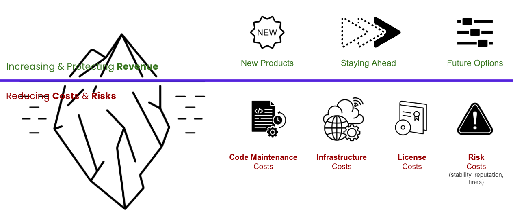

Economic Modeling With ROI and Financial Options: Learning From the Finance Field
|
|
IN THIS SECTION, YOU WILL: Get two answers to the question of the economic value of architecture: the return on investment metaphor and the selling options metaphor.
KEY POINTS:
- Architects are frequently asked about the (economic) value of architecture or technology investments.
- Answering this question is a crucial skill for any senior architect. However, answering it concisely and convincingly to a non-technical audience may be difficult.
- Borrowing from existing literature, I sketch two answers to the question of the economic value of architecture: the return on investment metaphor and the selling options metaphor.
Decision-making in the corporate world is frequently an economic risk exercise. Financial and risk modeling is like the crystal ball of the corporate world. It helps organizations make intelligent decisions, like choosing between investing in a new project or finally fixing the office coffee machine. These models forecast financial performance and assess economic scenarios, ensuring companies aren’t just throwing darts in the dark.
Economic and risk modeling is a game-changer in resource allocation. By predicting future trends and disruptions, these models help organizations use their resources wisely, for instance, to ensure they don’t run out of coffee (a critical issue for any IT business). It’s all about efficient resource management and avoiding those ‘Oops, we should have seen that coming’ moments.
These models majorly upgrade strategic planning, helping companies anticipate challenges and opportunities instead of reacting like a cat to a cucumber. Identifying risks before they bite means organizations can implement preventative measures, keeping things running smoothly.
Economic and risk modeling is the secret weapon for staying ahead of the game, achieving long-term goals, and ensuring the office party budget doesn’t get blown on a single extravagant cake.
Organizations conduct financial and risk modeling exercises, such as ROI calculations, for several key reasons:
- Decision-Making Support: Evaluate investments and compare alternatives to allocate resources effectively.
- Risk Management: Identify potential risks and perform sensitivity analysis to anticipate and mitigate issues.
- Budgeting and Planning: Aid in resource allocation, detailed budgeting, and long-term forecasting.
- Performance Measurement: Track progress, measure success, and ensure accountability.
- Stakeholder Communication: Build investor confidence and promote transparency with detailed financial projections.
- Strategic Planning: Explore different strategic scenarios and support growth-related decisions.
- Operational Efficiency: Identify cost reduction opportunities and optimize business processes.
- Regulatory Compliance: Ensure accurate financial reporting and assess regulatory risks.
As financial and risk modeling is essential in any organization, architects frequently need to answer questions about the (economic) value of technology investments and architecture. Answering this question is a crucial skill for any senior architect. Still, it may take much work to answer this seemingly harmless question concisely and convincingly to a non-technical audience without sounding like a techie version of Shakespeare.
Good architecture requires some investment. This investment is time and effort spent implementing an architecture pattern, reducing technical debt, or refactoring code to align with our architecture. Consequently, we need to explain the expected value of this investment. It’s all about showing that a little investment now will save a lot of headaches—and money—later.
Martin Fowler at #oop2014: "If you use the arguments on the left to justify refactoring, you're screwed." pic.twitter.com/b9ffsudckr
— Matthias Bohlen (@mbohlende) February 6, 2014
In this post, I sketch two answers to the question of the economic value of architecture:
- the return-on-investment (ROI) metaphor
- the financial options metaphor
The Return-on-Investment Metaphor
In economic terms, return on investment (ROI) is a ratio between profits and costs over some period. In other words, ROI shows how much you get back from your investment.
A high ROI means the investment’s gains compare favorably to its cost. As a performance measure, you can use ROI to evaluate an investment’s efficiency or compare the efficiencies of several different investments (Figure 1).
 Figure 1: An illustration of the ROI metaphor. Investment leads to lower costs or higher value. It takes some time to reach a break-even point when an additional value has compensated for the investment. After the break-even point, we earn more than without the investment.
Figure 1: An illustration of the ROI metaphor. Investment leads to lower costs or higher value. It takes some time to reach a break-even point when an additional value has compensated for the investment. After the break-even point, we earn more than without the investment.
An investment in good architecture can help increase the ROI of IT. An excellent example of using the ROI metaphor to argue for investing in architecture is the port of Martin Fowler, who uses this argument to argue for the importance of investing in improving internal quality. Figure 2 summarizes his argument.
Well-architected systems are typically much easier to understand and change. As our systems continuously evolve, the return on investing in making them easier to understand and change can be significant. The primary value of such investment comes from generating fewer errors and bugs, more straightforward modifications, a short time to market, and improved developer satisfaction.
 Figure 2: Software with high internal quality gets a short initial slowdown but delivers more rapidly and cheaply later (source martinfowler.com/articles/is-quality-worth-cost.html).
Figure 2: Software with high internal quality gets a short initial slowdown but delivers more rapidly and cheaply later (source martinfowler.com/articles/is-quality-worth-cost.html).
An ROI metaphor is easy to understand by a non-technical audience. Still, it has limitations when describing the value of architecture. The first limitation is that measuring architecture, quality, and productivity is challenging. Consequently, too much focus on ROI can lead to an obsession with cost-cutting. Costs are easy to measure, but the value of attributes like shorter time-to-market is much more difficult to quantify. Second, ROI is a good measure, but only some investments in architecture will increase profit. That is because we frequently have to make decisions with lots of uncertainty. Nevertheless, that does not mean that we should not make such investments. The following section explains why.
The Financial Options Metaphor
Gregor Hohpe has frequently argued that the best way to explain architecture to non-technical people is by using a financial option metaphor. A financial option is a right, but not an obligation, to buy or sell financial instruments at a future time with some predefined price. As such, a financial option is a way to defer a decision: instead of deciding to buy or sell a stock today, you have the right to make that decision in the future at a known price.
Options are not free, and a complex market exists for buying and selling financial options. Fischer Black and Myron Scholes computed the value of an option with the Black-Scholes Formula. A critical parameter in establishing the option’s value is the price at which you can purchase the stock in the future, the so-called strike price. The lower this strike price, the higher the value of the option (Figure 3).
Figure 3: An illustration of the financial option metaphor. Options have a price, leading to higher initial costs. However, if an opportunity can generate more value, we gain additional profit (or lose it if we do not invest).
Applying the financial option metaphor to IT architecture, we can argue that buying options gives the business and IT a way to defer decisions. Gregor Hohpe gives an example of the server size you need to purchase for a system. If your application is architected to be horizontally scalable, you can defer this decision: additional (virtual) servers can be ordered later at a known unit cost.
Another example of an IT option is architecting your system to separate concerns. For instance, deciding early what authentication mechanism an application should use may be challenging. A system that properly separates concerns allows changes to be localized so that updating one aspect of a system does not require expensive changing of the whole system. Such isolation will enable you to change a decision late in the project or even after go-live, at a nominal cost. For example, if authentication is a well-isolated concern, you must refactor only a minimal part of the system to use another authentication system.
The option’s value originates from being able to defer the decision until you have more information while fixing the price. In times of uncertainty, the value of the options that architecture sells only increases.
As with any analogy, the financial options analogy has its limits. Again, it is not easy to quantify architecture values and have metrics for the value of separation of concerns or horizontal scaling. Second, while the metaphor may be easy to grasp for an economic audience, it may require explaining to other stakeholders, who may be less familiar with financial options markets.
Communication Frameworks
UNESCO’s manual for investigative journalism says that “The facts do not tell the story. The story tells the facts.” The same applies to any financial analysis. Good data and analysis can have zero impact if they are not communicated in a way that people understand and lead to action.
General Framework For Communicting Value of IT Investments
Here, I share communication frameworks I developed and used to explain holistically the economic value of architecture and technology investment (Figure 4).
 Figure 4: A framework for discussing investments and options.
I separate the value of investments in two buckets:
- Increasing and protecting revenue and
- Reducing costs and risks.
Top Line: Increasing and Protecting Revenue
Increasing and protecting revenue investments have three forms.
Investments that create new revenue streams by creating new products or adding new features. These investments are typically easier to defend and control, as most stakeholders intuitively understand that new functionality is needed to create new value for customers and generate more revenue. An essential aspect of this type of investment is tracking the product’s success. Adding new features will not automatically create value for customers or revenue.
Investments needed to stay ahead. This type of investment is a less obvious way to protect and increase revenue. It boils down to the fact that you cannot stop developing your product as the rest of the world moves on. As the saying goes, “It takes all the running you can do to keep in the same place.” For instance, you must keep essential features in parity with the competition, your system must comply with changes in regulations, and your UX must be modern.
Investments needed to create future options refer to being in shape to adapt to changes in the market more quickly and to bring new features to the market more quickly. Investing in keeping your system easy to maintain and extend directly creates more opportunities. Another way to look at this value driver is to frame it as preventing a revenue loss due to the impossibility of quickly adapting to future opportunities.
Bottom Line: Reducing Costs and Risks
The second bucket relates to the more invisible part of the value created by investments:
Investments to reduce maintenance costs need to ensure that your code is easy to understand, change, and test. Such investments directly reduce your most significant cost, people costs, as code that is easy to maintain requires fewer people. Alternatively, you can look at these investments as a way to spend more effort on innovation and creating new revenue streams rather than merely keeping the systems in the air. Figure 5 illustrates what may happen if you do not invest. As systems grow in size and complexity, more developers are needed to maintain them. If the system is not easy to maintain, people will avoid touching code as they can easily break it. This situation will lead to a workaround (such as copying and pasting code and diverse hacks). These inefficient workarounds further increase the size and complexity of code, requiring even more developers to maintain it. And the vicious, expensive cycle continues.
Figure 5: A downward spiral of poorly maintainable code.
Investments in reducing infrastructure costs reduce spending and, if successful, are more directly visible. Such investments could take the form of redesigning your application to be more elastic, scaling up and down with minimal overhead. They could also create more transparency to have a precise image of all cost drivers and mechanisms to react quickly to any undesirable cost increases.
Investments in reducing license and vendor costs ensure that there is no unnecessary diversity of technologies and vendor contracts and that you can leverage economies of scale, as having fewer vendors with more users enables negotiating more favorable contracts.
Investments in reducing risk costs. When your system is down, your business is disrupted, and you lose revenue. According to diverse studies, the average cost of downtime ranges from $2,300 to $9,000 per minute. You must invest in keeping your system reliable and secure to avoid losing revenue and disrupting your business. While the benefits of these types of investments are huge, the challenge with building the business case for this investment is that a reliable system will only create a few incidents, making it less tangible for many stakeholders to understand the importance of continuing such investments. Or, as noted by Repenning and Sterman “Nobody Ever Gets Credit for Fixing Problems that Never Happened”.
The Tech Debt Reduction ROI Framework
In addition to the general framework discussion in this section, I frequently used the following framework to visually communicate how increasing technical debt progressively reduces profit through added operating, delay, and instability costs, emphasizing the importance of managing technical debt to preserve profitability.
Figure 6: A framework for discussing ROI of tech debt reduction from a profitability standpoint.
Figure 6 illustrates a framework for understanding the ROI (Return on Investment) of reducing technical debt, showing the impact on profit and costs across three progressive dimensions:
-
Extra Operating Costs: Technical debt can increase operating costs due to inefficiencies (e.g., complexity or lack of automation may require more people and time to make changes), reducing profit by raising expenses.
-
Costs of Delays: This dimension represents the loss of profit related to delays. Technical debt can impact the ability to deliver new features or fix issues promptly.
-
Instability Costs: Tech debt is a risk that can lead to less stable systems, with more frequent and longer downtimes and errors. Instability and downtime further reduce profit.
This framework shows the compounded effect of technical debt, where extra operating costs increase overall costs, and instability and downtime further reduce profit.
To Probe Further
- Architecture: Selling Options, by Gregor Hohpe, 2016
- Is High Quality Software Worth the Cost?, by Martin Fowler, 2019
- Don’t get locked up into avoiding lock-in, by Gregor Hohpe, 2019
Questions to Consider
- How can you effectively communicate the value of architectural investments to non-technical stakeholders in your organization?
- How do you weigh the importance of short-term cost reductions against long-term architecture improvements?
- How could the return-on-investment metaphor be useful in explaining the benefits of architecture investment to your team or organization?
- If you were to use the ROI metaphor to explain architecture’s value to non-technical stakeholders, what examples or case studies would you use to illustrate your points?
- What are some potential pitfalls of relying too heavily on the ROI metaphor when deciding on architecture investments?
- How could you use the financial options metaphor to explain the value of architectural investments? What are the benefits and challenges of using this metaphor in your organization?
- How can you better quantify the value of architectural investments, particularly in terms of attributes like time-to-market and developer satisfaction?
- How might the financial options metaphor apply to recent decisions facing your organization or team, and how could it influence those decisions?
Expanding the Architect's Toolkit ← Expanding the Architect's Toolkit: Learning From Other Fields |
Expanding the Architect's Toolkit Architecture in Product-Led Organizations: Learning From Customer-Centric Fields → |